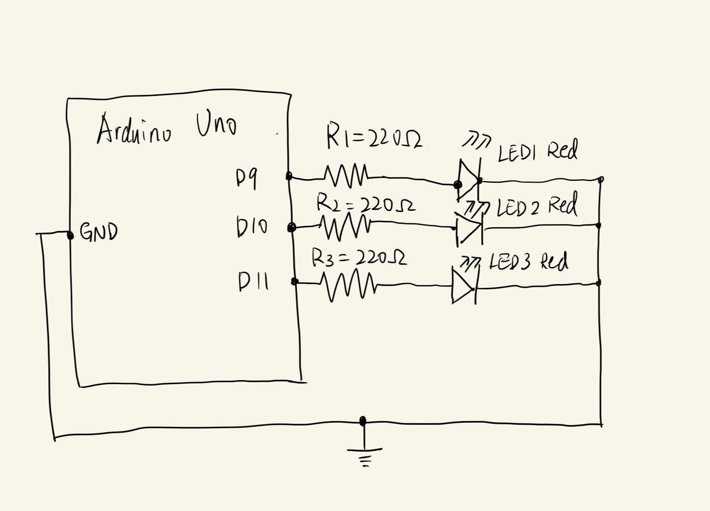
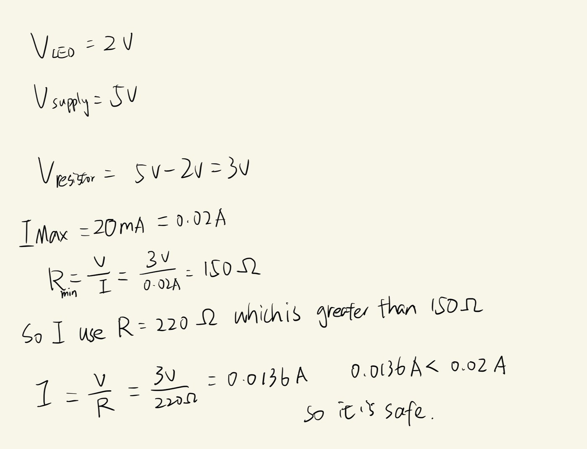
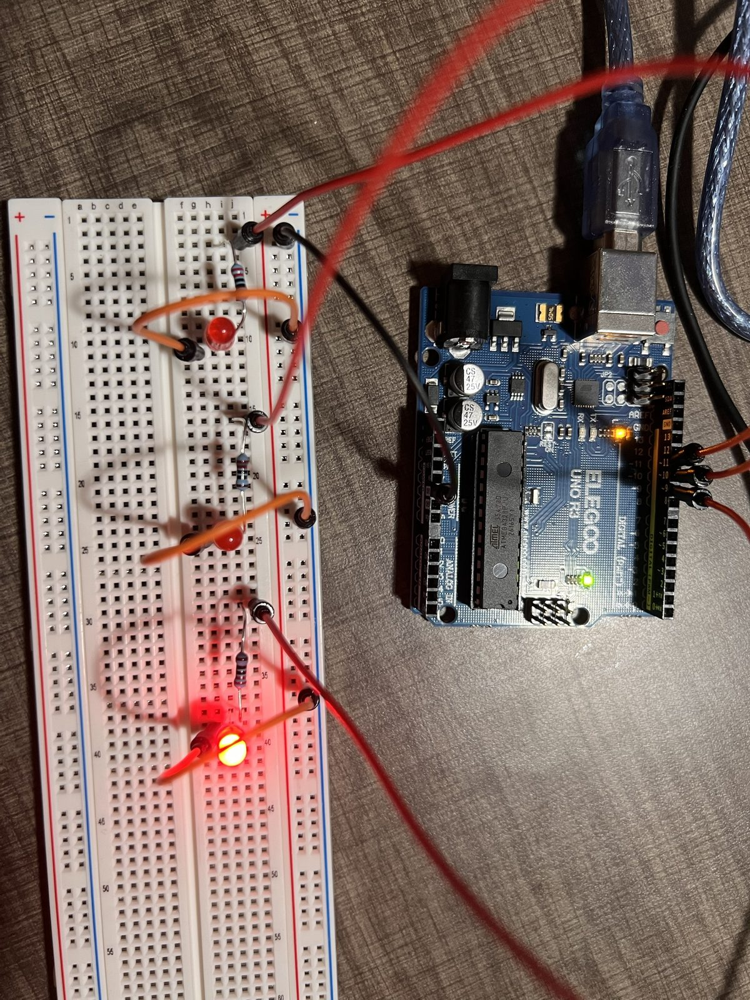
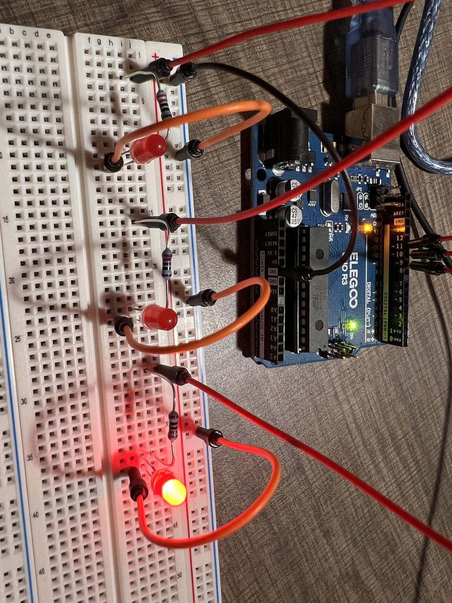
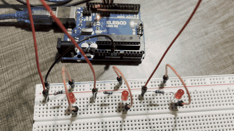
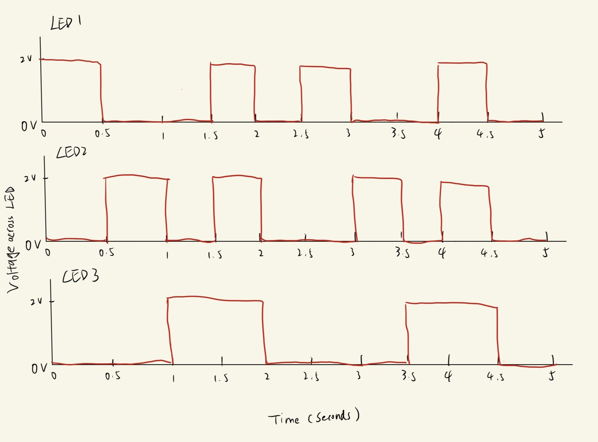

For this assignment I wired three red LEDs to an Arduino Uno and created a blink pattern: the LEDs light up one at a time, then all three flash together, and the pattern repeats again and again...




// pin for LED 1
int led1 = 9;
// pin for LED 2
int led2 = 10;
// pin for LED 3
int led3 = 11;
// time for each step in ms
int delay_time = 500;
// runs once at the start
void setup() {
// set LED 1 pin as output
pinMode(led1, OUTPUT);
// set LED 2 pin as output
pinMode(led2, OUTPUT);
// set LED 3 pin as output
pinMode(led3, OUTPUT);
}
// runs over and over
void loop() {
// LED 1 on
digitalWrite(led1, HIGH);
// wait
delay(delay_time);
// LED 1 off
digitalWrite(led1, LOW);
// LED 2 on
digitalWrite(led2, HIGH);
// wait
delay(delay_time);
// LED 2 off
digitalWrite(led2, LOW);
// LED 3 on
digitalWrite(led3, HIGH);
// wait
delay(delay_time);
// LED 3 off
digitalWrite(led3, LOW);
// LED 1 on
digitalWrite(led1, HIGH);
// LED 2 on
digitalWrite(led2, HIGH);
// LED 3 on
digitalWrite(led3, HIGH);
// wait with all three on
delay(delay_time);
// LED 1 off
digitalWrite(led1, LOW);
// LED 2 off
digitalWrite(led2, LOW);
// LED 3 off
digitalWrite(led3, LOW);
// wait with all three off
delay(delay_time);
}
delay_time), so the pattern
repeats every 2.5 seconds.

The Arduino Uno has 20 pins that can each control one LED, so that is 20 LEDs in total. We assume that each LED is at its max performance, so that is 20 x 20mA, which is 400mA.
I kept making delay_time smaller. I think when it was 6ms, I
could no longer tell that whetherthe LEDs were blinking.
Yes, I used Claude. When my LEDs didn't light up, I sent it a photo of my breadboard and it helped me find the problem: my LEDs were plugged in backwards. It also helped me with building this web page, since I forgot some of my frontend skills.
Reflection: it was most helpful for debugging, because it gave me a starting point.